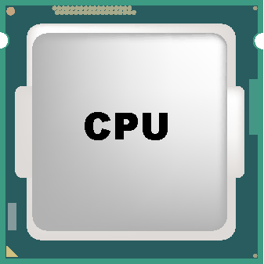
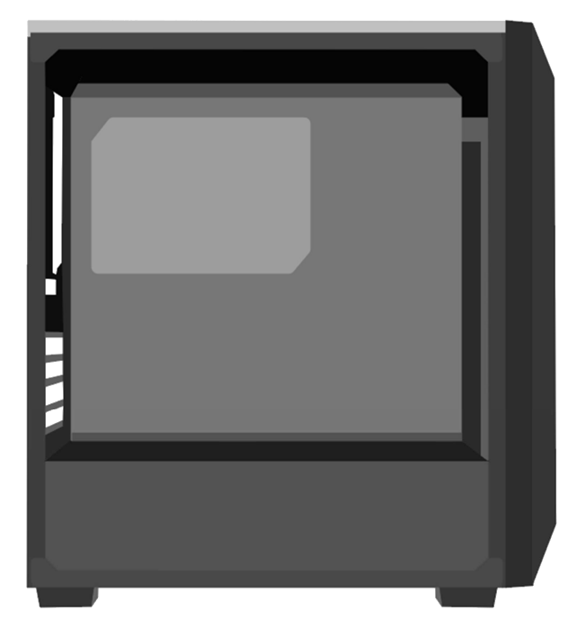

Introdução
Montar um computador é uma habilidade que exige uma combinação de conhecimento técnico, paciência e atenção aos detalhes. Esse processo envolve compreender o papel de cada componente essencial, desde o processador até o armazenamento, e como eles interagem para criar um sistema funcional e eficiente. Nesta página, apresentamos um guia prático e detalhado que o ajudará a navegar por todas as etapas da montagem, incluindo a escolha de peças compatíveis, o encaixe correto dos componentes e os cuidados necessários para garantir segurança e desempenho. Seja você um iniciante ou alguém com experiência, este conteúdo foi elaborado para oferecer suporte claro e coeso, permitindo que você construa seu computador com confiança e eficiência.
Componentes Principais
Placa-Mãe

A placa-mãe é o coração do computador. Ela conecta todos os componentes, permitindo a comunicação entre eles.
Memória RAM

A RAM é a memória de curto prazo do computador, usada para armazenar dados temporários enquanto você trabalha.
Disco Rígido (HD)

O disco rígido armazena todos os seus dados, como arquivos, programas e o sistema operacional.
Processador (CPU)
A CPU é o cérebro do computador, responsável por executar instruções e processar dados.
Gabinete
O gabinete abriga e protege todos os componentes do computador, além de fornecer ventilação adequada.